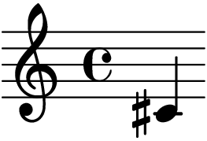
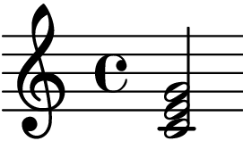

LilyPond#
- Online Editor:
提示
页面上的预览由 📦 sphinxnotes-lilypond 生成
文件结构 [1]#
可能出现在顶层的表达式如下：
- Output definition,
例如
paper,midi, andlayout，重复的定义会被合并，若冲突后者优先- Direct scheme expression
类似
#(set-default-paper-size "a7" 'landscape)备注
这里的 scheme 是指 📖 Scheme_(programming_language)
header定义谱面的头部，包含标题、作曲家等信息
score包含单个 Music Expression [music-expr] ，所有顶层的
score，会被隐式地包含在book里book用来实现同一份
*.ly文件输出多份谱子bookpart似乎是用来占位以保证谱子不跨页的
- Music Expression
会被隐式地包含在
score里- Markup text
TODO
- Variable
任意自定义的变量
记谱法#
单个音符升降半音 [2]#
- 升:
音名 +
is，如:lily:`{ cis' }`->
- 降:
音名 +
es
双音/和弦#
用 <> 括住音名，后跟时值，如 :lily:`{ <c' e' g'>2 }` ->

反复记号#
http://lilypond.org/doc/v2.19/Documentation/notation/long-repeats
六线谱#
五线谱六线谱混排#
symbols 是个 music expression [music-expr]
\score {
<<
\new Staff {
\clef "G_8"
\symbols
}
\new TabStaff {
\tabFullNotation
\symbols
}
>>
}
指定调式#
以 G 大调为例，在任意一个 expression block 中：key g major。
每行四小节#
每四个小节后面加个 break。
节奏#
附点#
- 附点:
在时值数后加一个点：
a8.- 双附点:
加俩点了
输出#
指定输出文件名称#
在 score block 显式地指定 book， 再指定 bookOutputSuffix 即可 [3]
\book {
\bookOutputSuffix "alice"
\score { … }
MIDI#
输出 MIDI 文件#
\score {
% ...
\midi { }
}
指定乐器#
设置 Staff 的 midiInstrument [4] 属性为乐器的名称 [5]
\new Staff \with {midiInstrument = "acoustic guitar (nylon)"} {
% ...
}
脚注
如果你有任何意见，请在此评论。 如果你留下了电子邮箱，我可能会通过 回复你。